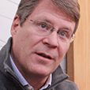
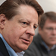

At GMCR, we are passionate about innovation and have a strong sense of responsibility to give back to the communities we're connected to, both in North America and in the communities around the world where we source our coffee and other ingredients. in short, we intend to improve the world through our business. — Brewing a Better World Together ™
Our Approach
In the 32 years since our founding, our Company has grown from a single coffee shop in Vermont to a leader in single-serve beverage in North America, yet our corporate culture has remained consistent. During fiscal 2012, we began the process of updating our corporate social responsibility strategy to reflect the changes in our company and the global environment in which we operate. Based on the most important sustainability issues for our company and stakeholders, our new strategy is intended to guide and drive progress.
The impact we make on our local communities and on our employee base — it's authentic, it's real, and the impact gets greater as we grow. Brian P. Kelley, President & CEO


One of the principles we've tried to use at our company is to let science and facts guide our initiatives. We also build credibility as we go forward by carefully picking those areas where we can truly make a difference. Larry Blanford, Director & Former President & CEO
Throughout our work, we place a premium on collaboration, innovation, self-reflection, and transparency. Michael Dupee, Vice President, Corporate Social Responsibility
Resilience, at its most basic level, refers to an ability to adapt quickly to, or recover from, changes. To GMCR, building a resilient supply chain means not only helping the producers and manufacturers in our supply chain, as well as their employees and wider communities, to adapt to the many challenges they face, but also to prosper over the short and long term. GMCR commits to long-term relationships that sustain healthier communities and create the highest-quality products. Our base of more than 7,000 suppliers is complex, like that of many companies, but it also has a unique dual nature that results from our role as both a maker of beverages from agricultural ingredients and a producer of small appliances.
Our beverages are known for their great taste and high quality, and that quality begins at the source. We believe that the best beverages — whether coffee, cocoa, cider, or tea — come from farmers in strong, healthy communities. Long-term, our company's ability to grow and thrive depends on maintaining reliable supplies of top-quality, sustainably sourced products.
The supply chain for our single-serve brewing systems is vastly different from the supply chain for the beverage ingredients themselves. Despite the differences in settings, our approach to our manufacturing supply chain is informed by the work we do in our agricultural communities. In both settings, we emphasize direct engagement and long-term commitments. We believe that the most important thing we can do is establish trusting relationships with out key manufacturers.
What a difference five years can make! Back in 2008, César and Juana Valle Lao's plot of land in the El Coyolar region of Nicaragua consisted of a scant couple of acres of coffee plants. Learn how programs GMCR supports have helped the Lao family improve their economic and food security through crop diversification.
46% Suppliers in scope for GMCR's risk assessment process (by percent of total spend)20,000 Number of families who received food-security support from GMCR-funded programsm fiscal 2012
Sustainable Products
We believe that our products can be sourced, designed, and manufactured in ways that are good for people and good for the environment. We balance the way we engineer our operations, and our finished products, to minimize our environmental impacts while achieving desired business results.
What's one of the best ways to cut waste at a manufacturing facility? Have a supervisor with an aversion to throwing things away. Read more about some of our waste reduction initiatives.
$11 Million Pound sold of Rainforest Alliance® certified coffee sold by GMCR, fiscal 2012$32 Million Pounds of fair trade coffee sold by GMCR, fiscal 2012
We drive change in the world by investing in high-quality, sustainably sourced products that contribute to better communities wherever they are made. Certification programs such as Fair Trade and Rainforest Alliance help to improve the social welfare and economic status of coffee farmers. And the more consumers purchase there products, the more we can increase our investments in coffee-growing communities.
Ground to Grow On™ K-Cup® Take-Back Program Fiscal 2012 Results4.1M Estiamted used K-Cup® packs recovered85,350 Estimated total pounds of coffee ground to compost139 Estimated total potential kilowatt hours
Global Warming Potential based on K-CUP® Pack LCA
The ensure scientific rigor in the way we approach product impact. we conducted a Life Cycle Analysis (LCA) for our coffee K-Cup pack to understand the environmental impacts along its life cycle. What we learned is the disposal of a product's packaging represents a fraction of the total environmental impact.
A culture of volunteerism permeates GMCR. We want our employees to feel engaged with the company, and volunteerism is one critical means of accomplishing that goal.
Our employees share GMCR's common purpose and are motivated to help us achieve our goals. We focus on developing our people and engaging them in meaningful ways that go beyong their day-to-day jobs. We enable out colleagues to advance their careers and provide growth opportunities that benefit both the individual and GMCR as a whole.
We first began sending employees to coffee famrs in 1992, when 11 employees headed to Costa Rica to learn about coffee farming and processing. Learn how a 2012 trip to Mexico changed how Van Houtte Coffee Services Inc. employee Ryan Houle thinks about coffee.
$1.65 Million Donations of product, equipment, and administrative supplies (cost of goods sold)$2.89 Million Total grant/matching donation dollars to local communities in the U.S. and Canada, Fiscal 2012
The Road Ahead
During fiscal 2013, we will work toward the goals we have identified. We will also build out our sustainability strategy by setting new, longer-term goals and ambitions in key sustainability areas and identifying strategic plans in each area. We look forward to reporting on these in the coming years.